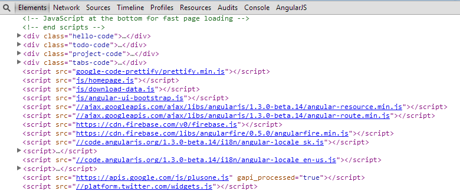
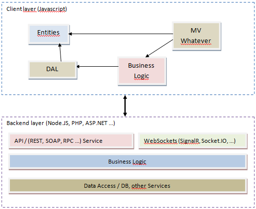

Frontend-Testing
&
RequireJS
Using Asynchronous Module Definition (AMD) in Frontend Tests
Created by Vildan Softic (zewa666)

You sure that's a good idea?
Short on time ... so take it as a teaser
Whats gonna be covered?
Asynchronous Module Definition (AMD)
- Module Pattern
- RequireJS
Frontend Testing

- Why the heck?
- Types of testing
- Jasmine
- Karma Runner
Let's start ...
Module Pattern
[...] a software design technique that emphasizes separating the functionality of a program into independent, interchangeable modules, such that each contains everything necessary to execute only one aspect of the desired functionality.
Give me teh codez:
var Module = (function () {
return {
name: "WOOHOOOO"
}
})();
Revealing Module Pattern:
var Module = (function () {
// private indicated by _ ==> (convention)
var _privateMethod = function () {
console.log("can't touch this");
};
// may call private methods
var publicMethod = function () {
_privateMethod();
};
return {
publicMethod: publicMethod
};
})(); // <-- singleton
}); // <-- constructor
Here's the problem
Endless files and dependencies 
Here's another one
So much stuff to loadRequireJS to rescue
Features
- Asynchronous load of dependencies
- Don't care about order, RequireJS handles this
- Easy dependency management
- Make Modules REQUEST instead be BURDNED with stuff
- Optimization (Bundling, Minifying, ...)
Getting started (1)
In your shell ...
<!DOCTYPE html>
<html>
<head>
<title>My Sample Project</title>
<!-- data-main attribute tells require.js to load
scripts/main.js after require.js loads. -->
<script data-main="scripts/main" src="scripts/require.js"></script>
</head>
<body>
<h1>My Sample Project</h1>
</body>
</html>
Getting started (2)
Your bootstrapper ...
require(["helper/util"], function(util) {
//This function is called when scripts/helper/util.js is loaded.
//If util.js calls define(), then this function is not fired until
//util's dependencies have loaded, and the util argument will hold
//the module value for "helper/util".
});
Getting started (3)
Your new module ...
define(function (require) {
return {
getHello: function () {
var helloFormatter = require('utils/helloFormatter');
return helloFormater.format('Hello World');
}
};
});
Live demo
Why and what to test?
- Unit Testing
- Integration Testing
- Functional Tests
- Integrity Tests
- Coded UI Tests
But why on the frontend?!?

Single Page Architecture
Generic architecture model
Single Page Architecture
Touchpoints on the client sideWelcome to Jasmine

- Behavior driven development (BDD) approach
- Simple syntax (it, should, expect, toBe...)
- Structure Scenarios/Stories via describe
- Custom Matchers possible
Short example:
describe("Scenario description", function() {
var foo = 0; // Globally available to all sub parts
// Setup function
beforeEach(function() {
foo += 1;
});
// Teardown
afterEach(function() {
foo = 0;
});
// Test case
it("should test foo", function() {
expect(foo).toEqual(1);
});
// Second testcase
it("should be 2", function() {
expect(foo).toEqual(2);
});
});
Additional features
- Nested describes (aka Scenario and Subscenarios)
- Different scopes per story
- Spies (mock a function/object)
- Async via callback "done"
Check it out on http://jasmine.github.io/2.0/introduction.html
Live demo
Continuous Testing with Karma

- Testing Framework Agnostic
- Flexible configuration
- Extensible (Istanbul)
- Fast enough to allow continous testing
Installation:
Node.JS example
1. create a package.json file like this:
{
"name": "ProjectName",
"version": "0.1.0",
"description": "Your description",
"repository": "your github path",
// Not necessary for production use
"devDependencies": {
"karma": "~0.12.16",
"requirejs": "~2.1.14",
"karma-jasmine": "~0.2.0",
"karma-phantomjs-launcher": "~0.1.4",
"karma-requirejs": "~0.2.2",
"karma-coverage": "^0.2.4"
}
}
2. run npm install
Configuration
Create the karma.conf.js file in the app roothttp://karma-runner.github.io/0.8/config/configuration-file.html
module.exports = function(config) {
config.set({
basePath: '',
frameworks: ['jasmine', 'requirejs'],
files: [
'test-main.js',
{pattern: 'js/modules/*.js', included: false},
{pattern: 'tests/spec/*.js', included: false}
],
preprocessors: { 'js/modules/*.js': 'coverage' },
reporters: ['progress', 'coverage'],
port: 9876,
autoWatch: true,
browsers: ['PhantomJS']
});
};
RequireJS Config
Create the test-main.js file in the app root to config requirejs
var tests = [];
for (var file in window.__karma__.files) {
if (window.__karma__.files.hasOwnProperty(file))
if (/spec\.js$/.test(file))
tests.push(file);
}
requirejs.config({
baseUrl: '/base',
paths: {
'src': 'js/modules',
'specs': 'tests/spec/',
'jquery': 'bower_components/jquery/dist/jquery'
},
deps: tests,
callback: window.__karma__.start
});
Run Karma
Istanbul Code Coverage
Live demo
Summary
- Frontend architecture is IMPORTANT
- RequireJS can help to achieve it
- Whether you test or not ... know about it!
- If its not easy its skipped
- Know your tools
- Mocha, Chai, Jasmine, Karma, Chutzpah, Sinon, ...
- Ask for help, nobody is perfect
... heard about a guy named nobody :)